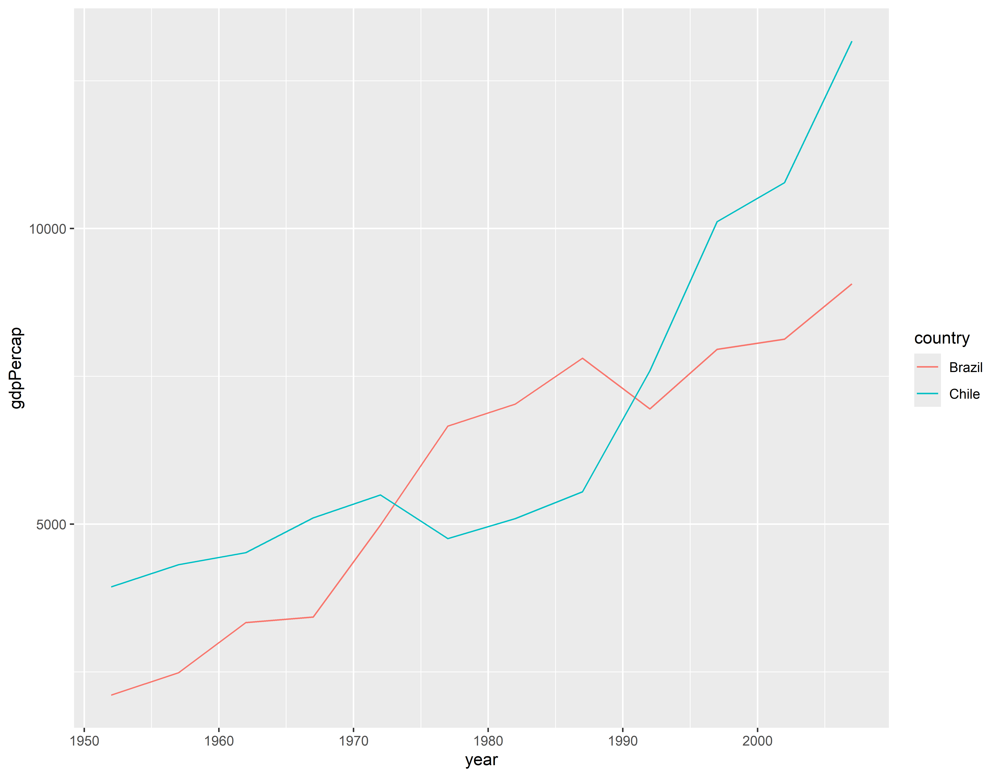
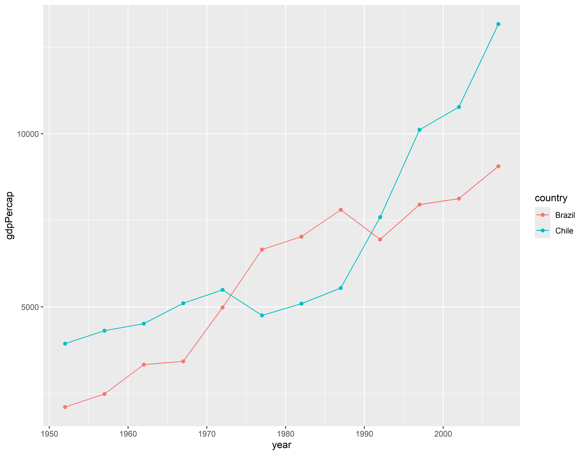
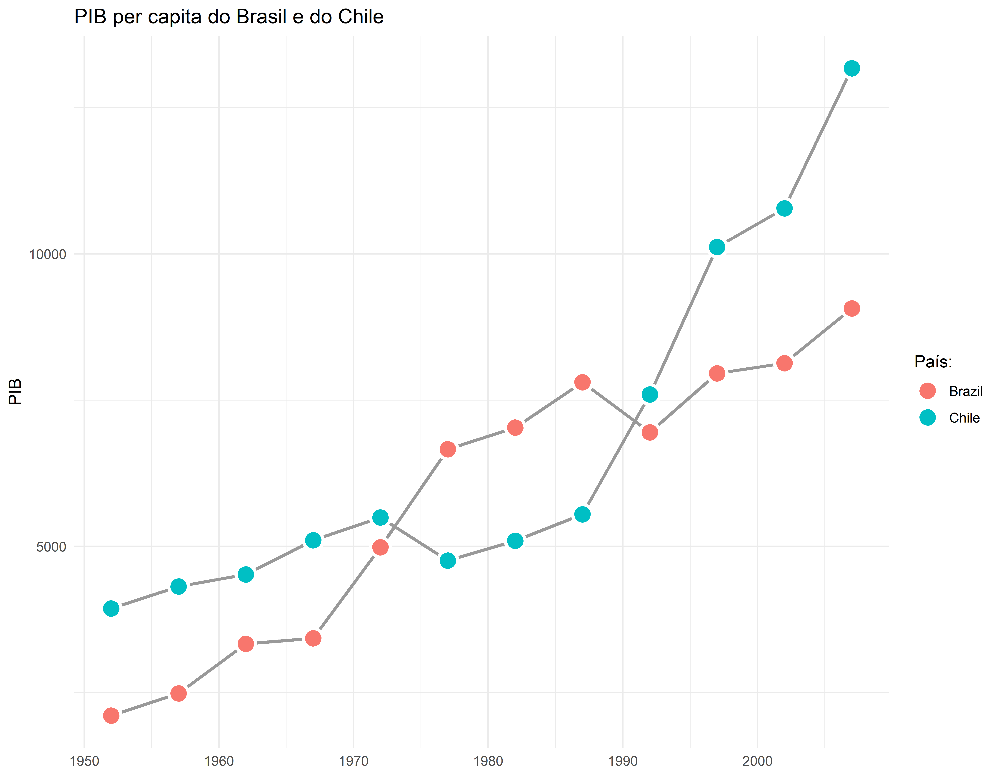
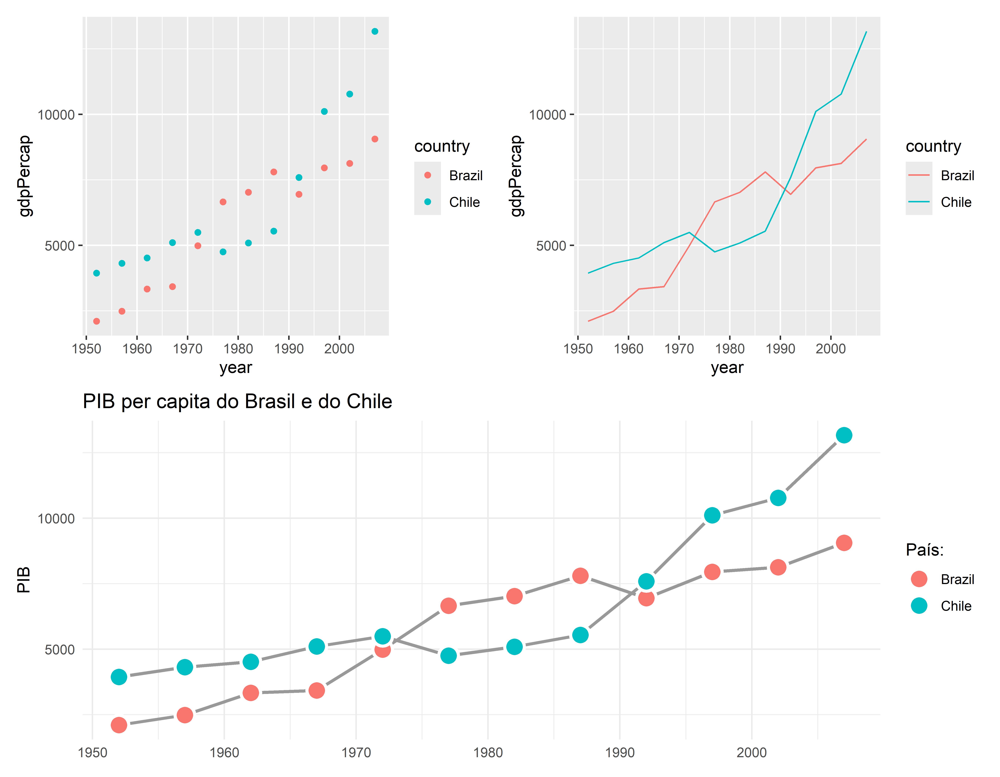

Manipulação dos dados
Carregando bibliotescas
Vamos trabalhar de novo com os dados do gapminder para fazer algumas manipulações de dados que são muito úteis no dia a dia.
Este material foi em parte adaptado do curso Data Visualization in R with ggplot2 de Kara Woo
Filtrando 2007
#> country continent year lifeExp
#> Afghanistan: 12 Africa :624 Min. :1952 Min. :23.60
#> Albania : 12 Americas:300 1st Qu.:1966 1st Qu.:48.20
#> Algeria : 12 Asia :396 Median :1980 Median :60.71
#> Angola : 12 Europe :360 Mean :1980 Mean :59.47
#> Argentina : 12 Oceania : 24 3rd Qu.:1993 3rd Qu.:70.85
#> Australia : 12 Max. :2007 Max. :82.60
#> (Other) :1632
#> pop gdpPercap
#> Min. :6.001e+04 Min. : 241.2
#> 1st Qu.:2.794e+06 1st Qu.: 1202.1
#> Median :7.024e+06 Median : 3531.8
#> Mean :2.960e+07 Mean : 7215.3
#> 3rd Qu.:1.959e+07 3rd Qu.: 9325.5
#> Max. :1.319e+09 Max. :113523.1
#> gap_07 <- filter(gapminder, year == 2007)Vendo primeiras e últimas 10 linhas
| country | continent | year | lifeExp | pop | gdpPercap |
|---|---|---|---|---|---|
| Afghanistan | Asia | 2007 | 43.828 | 31889923 | 974.5803 |
| Albania | Europe | 2007 | 76.423 | 3600523 | 5937.0295 |
| Algeria | Africa | 2007 | 72.301 | 33333216 | 6223.3675 |
| Angola | Africa | 2007 | 42.731 | 12420476 | 4797.2313 |
| Argentina | Americas | 2007 | 75.320 | 40301927 | 12779.3796 |
| Australia | Oceania | 2007 | 81.235 | 20434176 | 34435.3674 |
| Austria | Europe | 2007 | 79.829 | 8199783 | 36126.4927 |
| Bahrain | Asia | 2007 | 75.635 | 708573 | 29796.0483 |
| Bangladesh | Asia | 2007 | 64.062 | 150448339 | 1391.2538 |
| Belgium | Europe | 2007 | 79.441 | 10392226 | 33692.6051 |
| country | continent | year | lifeExp | pop | gdpPercap |
|---|---|---|---|---|---|
| Uganda | Africa | 2007 | 51.542 | 29170398 | 1056.3801 |
| United Kingdom | Europe | 2007 | 79.425 | 60776238 | 33203.2613 |
| United States | Americas | 2007 | 78.242 | 301139947 | 42951.6531 |
| Uruguay | Americas | 2007 | 76.384 | 3447496 | 10611.4630 |
| Venezuela | Americas | 2007 | 73.747 | 26084662 | 11415.8057 |
| Vietnam | Asia | 2007 | 74.249 | 85262356 | 2441.5764 |
| West Bank and Gaza | Asia | 2007 | 73.422 | 4018332 | 3025.3498 |
| Yemen, Rep. | Asia | 2007 | 62.698 | 22211743 | 2280.7699 |
| Zambia | Africa | 2007 | 42.384 | 11746035 | 1271.2116 |
| Zimbabwe | Africa | 2007 | 43.487 | 12311143 | 469.7093 |
Manipulando 1
Selecionando dados por país
Manipulando 2
Selecionando dados para 2007 excluindo a Oceania
filter(gapminder, year == 2007 & continent != "Oceania")#> # A tibble: 140 × 6
#> country continent year lifeExp pop gdpPercap
#> <fct> <fct> <int> <dbl> <int> <dbl>
#> 1 Afghanistan Asia 2007 43.8 31889923 975.
#> 2 Albania Europe 2007 76.4 3600523 5937.
#> 3 Algeria Africa 2007 72.3 33333216 6223.
#> 4 Angola Africa 2007 42.7 12420476 4797.
#> 5 Argentina Americas 2007 75.3 40301927 12779.
#> 6 Austria Europe 2007 79.8 8199783 36126.
#> 7 Bahrain Asia 2007 75.6 708573 29796.
#> 8 Bangladesh Asia 2007 64.1 150448339 1391.
#> 9 Belgium Europe 2007 79.4 10392226 33693.
#> 10 Benin Africa 2007 56.7 8078314 1441.
#> # ℹ 130 more rowsManipulando 3
Selecionando dados de 2007, agrupando por continente e sumarizando para achar a média da população por continente
Visualizando 1
Mostrar linhas e pontos do PIB ao longo do tempo para Brasil e Chile
Visualizando 2
p2 <- p + geom_line()
p2
Visualizando 3
p3 <- p + geom_line() + geom_point()
p3
Melhorando a visualização
p4 <- ggplot(gap_brachi, aes(x = year, y = gdpPercap)) +
geom_line(
aes(group = country),
color = "gray60", linewidth = 1
) +
geom_point(
aes(fill = country),
size = 5, shape = 21,
color = "white", stroke = 1.5
) +
labs(
title = "PIB per capita do Brasil e do Chile",
x = NULL, y = "PIB", fill = "País:"
) +
theme_minimal()
p4
Visualizando 4 - Usando o pacote patchwork
(p1 + p2) /
p4
Manipulando 4
Contando número de países e continentes com distinct
nrow(gapminder) ## Esta não é a informação que eu quero#> [1] 1704head(gapminder)#> # A tibble: 6 × 6
#> country continent year lifeExp pop gdpPercap
#> <fct> <fct> <int> <dbl> <int> <dbl>
#> 1 Afghanistan Asia 1952 28.8 8425333 779.
#> 2 Afghanistan Asia 1957 30.3 9240934 821.
#> 3 Afghanistan Asia 1962 32.0 10267083 853.
#> 4 Afghanistan Asia 1967 34.0 11537966 836.
#> 5 Afghanistan Asia 1972 36.1 13079460 740.
#> 6 Afghanistan Asia 1977 38.4 14880372 786.#> [1] 142#> [1] 5Fazendo contagens de dados
Mudando orientação dos dados
library(readxl)
propaganda <- read_excel("Propaganda.xlsx")
head(propaganda)#> # A tibble: 6 × 4
#> TV Radio Newspaper Sales
#> <dbl> <dbl> <dbl> <dbl>
#> 1 230. 37.8 69.2 22.1
#> 2 44.5 39.3 45.1 10.4
#> 3 17.2 45.9 69.3 9.3
#> 4 152. 41.3 58.5 18.5
#> 5 181. 10.8 58.4 12.9
#> 6 8.7 48.9 75 7.2propaganda <- propaganda %>% rename(Jornal = Newspaper, Vendas = Sales)
propaganda %>% tidyr::pivot_longer(!Vendas, names_to="Midia", values_to="Orcamento")#> # A tibble: 600 × 3
#> Vendas Midia Orcamento
#> <dbl> <chr> <dbl>
#> 1 22.1 TV 230.
#> 2 22.1 Radio 37.8
#> 3 22.1 Jornal 69.2
#> 4 10.4 TV 44.5
#> 5 10.4 Radio 39.3
#> 6 10.4 Jornal 45.1
#> 7 9.3 TV 17.2
#> 8 9.3 Radio 45.9
#> 9 9.3 Jornal 69.3
#> 10 18.5 TV 152.
#> # ℹ 590 more rows#> record_id month day year plot_id species_id sex hindfoot_length weight
#> 1 1 7 16 1977 2 NL M 32 NA
#> 2 72 8 19 1977 2 NL M 31 NA
#> 3 224 9 13 1977 2 NL NA NA
#> 4 266 10 16 1977 2 NL NA NA
#> 5 349 11 12 1977 2 NL NA NA
#> 6 363 11 12 1977 2 NL NA NA
#> genus species taxa plot_type
#> 1 Neotoma albigula Rodent Control
#> 2 Neotoma albigula Rodent Control
#> 3 Neotoma albigula Rodent Control
#> 4 Neotoma albigula Rodent Control
#> 5 Neotoma albigula Rodent Control
#> 6 Neotoma albigula Rodent Controlpesquisa_gw <- pesquisa %>% filter(!is.na(weight)) %>%
group_by(year, genus) %>%
summarize(peso_medio = mean(weight))#> `summarise()` has grouped output by 'year'. You can override using the
#> `.groups` argument.head(pesquisa_gw)#> # A tibble: 6 × 3
#> # Groups: year [1]
#> year genus peso_medio
#> <int> <chr> <dbl>
#> 1 1977 Chaetodipus 15.3
#> 2 1977 Dipodomys 52.5
#> 3 1977 Onychomys 21.4
#> 4 1977 Perognathus 7.17
#> 5 1977 Peromyscus 19.5
#> 6 1977 Reithrodontomys 10pesquisa_gw %>% tidyr::pivot_wider(names_from="genus", values_from="peso_medio")#> # A tibble: 26 × 11
#> # Groups: year [26]
#> year Chaetodipus Dipodomys Onychomys Perognathus Peromyscus Reithrodontomys
#> <int> <dbl> <dbl> <dbl> <dbl> <dbl> <dbl>
#> 1 1977 15.3 52.5 21.4 7.17 19.5 10
#> 2 1978 14.9 73.9 26.5 7.09 20.5 7.5
#> 3 1979 15.1 74.9 27.4 7.53 21.3 8.33
#> 4 1980 14.2 73.1 28.3 7.46 22.4 10.2
#> 5 1981 14.0 72.7 28.4 7.15 20.4 11.2
#> 6 1982 16.1 66.3 29.9 6.92 21.3 10.5
#> 7 1983 15.5 65.0 29.0 6.83 21.5 9.87
#> 8 1984 15.3 52.8 28.3 16.9 20.0 11.2
#> 9 1985 15.8 51.1 28.1 32.7 20.0 8.37
#> 10 1986 16.8 56.4 27.5 18.3 22.1 10.8
#> # ℹ 16 more rows
#> # ℹ 4 more variables: Neotoma <dbl>, Sigmodon <dbl>, Spermophilus <dbl>,
#> # Baiomys <dbl>